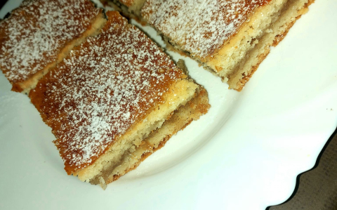

Régimódi, egyszerű almás pite a jól bevált receptem szerint.
Szerintem a sok töltelékről lesz az almás pite ellenállhatatlan.
Tudom, hogy rengetegnek tűnik az alma mennyisége, de a pitében 2X
annyi töltelék szükséges, mint a tészta maga.

Hozzávalók egy 30*40 cm-es tepsihez
A tésztához
40 dkg finomliszt
15 dkg porcukor
15 dkg zsír
1/2 csomag sütőpor
2 dl tejföl
csipet só
A töltelékhez
1,5 kg alma
ízlés szerint cukor és fahéj
kevés darált keksz vagy zsemlemorzsa
A tetejére
1 FUCHS SZABADTARTÁSOS TOJÁSsárgája
Elkészítése
A tészta hozzávalóiból összeállítjuk a tésztát és amíg a
tölteléket elkészítjük, addig a tésztát betesszük a hűtőbe.
Az almát meghámozzuk és lereszeljük. Ízlés szerint cukorral és
fahéjjal ízesítjük. Állni hagyjuk negyed órát. Ezután kinyomkodjuk
a levét, darált kekszet vagy zsemlemorzsát adunk hozzá és
összeforgatjuk. Ez felszívja a maradék levét.
Egy tepsit kibélelünk sütőpapírral. A tésztát elfelezzük és az
egyik részét kinyújtjuk a tepsi méretére, majd beletesszük.
Megszórjuk keksszel vagy morzsával és az almát elegyengetjük
rajta. Kinyújtjuk a másik tésztánkat is, ezzel befedjük a
tölteléket. A sodrófát finoman végiggörgetjük rajta, biztosítjuk
az egyenletességét a sütinknek.
Tojássárgájával megkenjük, majd egy villával megszurkáljuk. 180
fokra melegített sütőben aranybarnára sütjük.